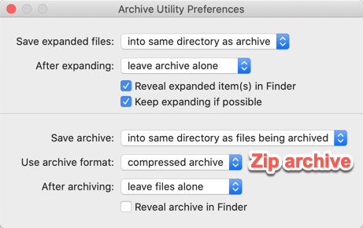

Linux Command - zip/unzip
linux 下的 压缩/解压缩（zip/unzip）命令。
将当前目录下，除了 donotinclude.h、orthis.h 之外的所有 .h 和 .c 文件压缩打包成 archive：
archive#
zip 打包当前目录：
zip 打包 log 文件：
FAN-MB1:zip $ zip -v avg_speed ~/Downloads/Logs/*-avg_speed.log
adding: ~/Downloads/Logs/2019-12-01-10-avg_speed.log (in=2394) (out=795) (deflated 67%)
adding: ~/Downloads/Logs/2019-12-01-11-avg_speed.log (in=1638) (out=642) (deflated 61%)
adding: ~/Downloads/Logs/2019-12-01-15-avg_speed.log (in=1640) (out=656) (deflated 60%)
adding: ~/Downloads/Logs/2019-12-01-21-avg_speed.log (in=1184) (out=472) (deflated 60%)
total bytes=6856, compressed=2565 -> 63% savings
FAN-MB1:zip $ zip -v map_image ~/Downloads/Images/map-*.png
adding: Users/faner/Downloads/Images/map-深圳市东湖公园.png (in=2619042) (out=2597184) (deflated 1%)
adding: Users/faner/Downloads/Images/map-深圳市梧桐山森林公园.png (in=2592064) (out=2567088) (deflated 1%)
adding: Users/faner/Downloads/Images/map-深圳市民中心周边公园.png (in=2888867) (out=2877121) (deflated 0%)
total bytes=8099973, compressed=8041393 -> 1% savings
exclude#
zip -r archive.zip . -x .DS_Store
zip -r archive.zip . -x __MACOSX/\*
zip -r archive.zip . -x \*/.DS_Store \*/__MACOSX/\*
append#
向已存在的 exist.zip 中追加打包 extra.txt 文件。
zip分卷压缩#
- 首先将其压缩成一个大的zip压缩包之后再分卷
- 将压缩完的大压缩包zip分卷
命令执行完会在文件夹下生成 b.zip、b.z01、b.z02 ...等。
preview#
Preview an archive contents without extracting it
- zip:
unzip -l FILE.zip，或-v - tar.gz:
tar -tzvf FILE.tar.gz - tar.bz2:
tar -tjvf FILE.tar.bz2或bunzip2 -c FILE.tar.bz2 | tar tvf - - .7z:
7z l FILE.7z
其他：
file 命令查看文件属性：
faner@FAN-MB1:~/Downloads/zip
> file avg_speed.zip
avg_speed.zip: Zip archive data, at least v2.0 to extract
faner@FAN-MB1:~/Downloads/zip
> file -bI avg_speed.zip
application/zip; charset=binary
unzip -l 预览压缩包内容：
FAN-MB1:zip $ unzip -l avg_speed.zip
Archive: avg_speed.zip
Length Date Time Name
--------- ---------- ----- ----
2394 12-01-2019 16:54 Users/faner/Downloads/Logs/2019-12-01-10-avg_speed.log
1638 12-01-2019 16:55 Users/faner/Downloads/Logs/2019-12-01-11-avg_speed.log
1640 12-01-2019 17:00 Users/faner/Downloads/Logs/2019-12-01-15-avg_speed.log
1184 12-01-2019 21:38 Users/faner/Downloads/Logs/2019-12-01-21-avg_speed.log
--------- -------
6856 4 files
FAN-MB1:zip $ unzip -l map_image.zip
Archive: map_image.zip
Length Date Time Name
--------- ---------- ----- ----
2619042 12-02-2018 10:37 Users/faner/Downloads/Images/map-深�?��?�?�?�?��?�.png
2592064 12-02-2018 10:38 Users/faner/Downloads/Images/map-深�?��?梧�?山森�??�?��?�.png
2888867 12-02-2018 10:33 Users/faner/Downloads/Images/map-深�?��?�?中�?�?�边�?��?�.png
--------- -------
8099973 3 files
delete hidden items#
用 macOS Archive Utility.app 打包生成的 zip 文件中，通常包含 .DS_Store 文件。
如何删除 macOS 压缩包中的隐藏文件？
zip -d（--delete）: Remove (delete) entries from a zip archive.
删除 macOS 下打包进去的 .DS_Store：
用 macOS Archive Utility.app 打包生成的 zip 文件中，通常包含 __MACOSX/ 目录。
FAN-MB1:zip $ unzip -l map_image-arch.zip
Archive: map_image-arch.zip
Length Date Time Name
--------- ---------- ----- ----
2619042 12-02-2018 10:37 map-深�?��?�?�?�?��?�.png
575 12-02-2018 10:37 __MACOSX/._map-深�?��?�?�?�?��?�.png
2592064 12-02-2018 10:38 map-深�?��?梧�?山森�??�?��?�.png
575 12-02-2018 10:38 __MACOSX/._map-深�?��?梧�?山森�??�?��?�.png
2888867 12-02-2018 10:33 map-深�?��?�?中�?�?�边�?��?�.png
575 12-02-2018 10:33 __MACOSX/._map-深�?��?�?中�?�?�边�?��?�.png
--------- -------
8101698 6 files
执行 zip -d 删除 __MACOSX/ 目录下的内容：
FAN-MB1:zip $ zip -d map_image-arch.zip __MACOSX/\*
deleting: __MACOSX/._map-深圳市东湖公园.png
deleting: __MACOSX/._map-深圳市梧桐山森林公园.png
deleting: __MACOSX/._map-深圳市民中心周边公园.png
FAN-MB1:zip $ unzip -l map_image-arch.zip
Archive: map_image-arch.zip
Length Date Time Name
--------- ---------- ----- ----
2619042 12-02-2018 10:37 map-深�?��?�?�?�?��?�.png
2592064 12-02-2018 10:38 map-深�?��?梧�?山森�??�?��?�.png
2888867 12-02-2018 10:33 map-深�?��?�?中�?�?�边�?��?�.png
--------- -------
8099973 3 files
如果想保留原始压缩包，可通过 -O output-file 指定保存操作后的结果。
同时删除打包进去的隐藏文件和文件夹：
zip -d file.zip .DS_Store __MACOSX/\*
extract#
利用 unzip 命令解压 zip 到同名子目录（-d 指定）：
faner@FAN-MB1:~/Downloads/zip
> unzip avg_speed-arch.zip -d avg_speed-arch
Archive: avg_speed-arch.zip
inflating: avg_speed-arch/2019-12-01-10-avg_speed.log
inflating: avg_speed-arch/__MACOSX/._2019-12-01-10-avg_speed.log
inflating: avg_speed-arch/2019-12-01-11-avg_speed.log
inflating: avg_speed-arch/__MACOSX/._2019-12-01-11-avg_speed.log
inflating: avg_speed-arch/2019-12-01-15-avg_speed.log
inflating: avg_speed-arch/__MACOSX/._2019-12-01-15-avg_speed.log
inflating: avg_speed-arch/2019-12-01-21-avg_speed.log
inflating: avg_speed-arch/__MACOSX/._2019-12-01-21-avg_speed.log
只解压其中的某一个文件到当前目录：
faner@FAN-MB1:~/Downloads/zip
> unzip avg_speed-arch.zip 2019-12-01-10-avg_speed.log
Archive: avg_speed-arch.zip
inflating: 2019-12-01-10-avg_speed.log
GUI#
macOS 原生自带了 Archive Utility.app 软件：

- After expanding 可选择在解压后保留或移除压缩包：
- leave archive alone
- move archive to Trash
- delete archive
- Use archive format 可以从 Compressed archive 修改为 Zip archive。
How to Open and Browse ZIP Files on macOS Without Unarchiving Them
Dr. Unarchiver: Straightforward ZIP, RAR, and Other Archive ManagementZipster: Mount ZIP Files in the Finder (and Only ZIP Files)
ezip
https://apps.apple.com/cn/app/id1127253508?mt=12